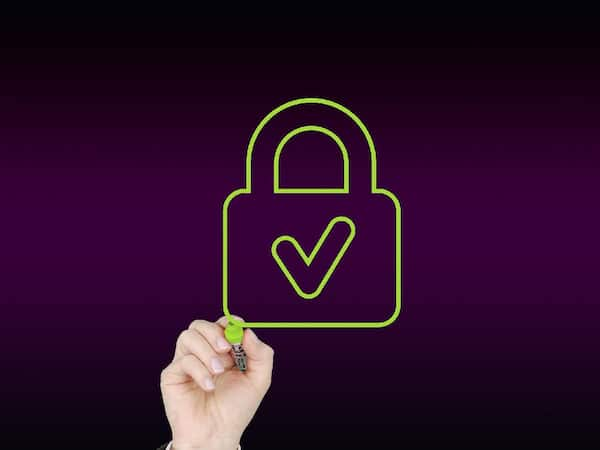
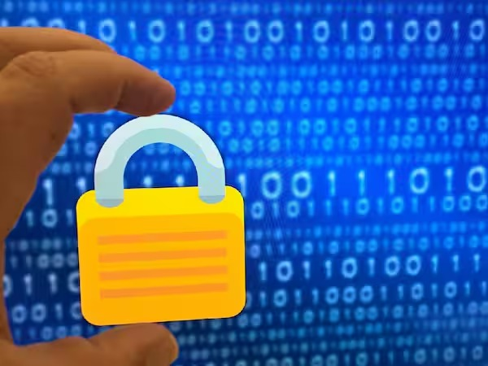
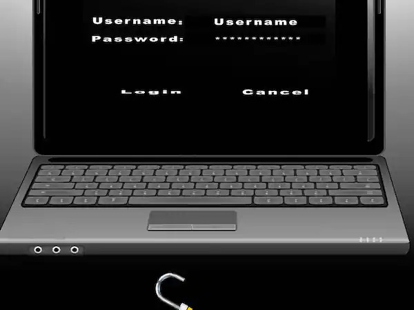
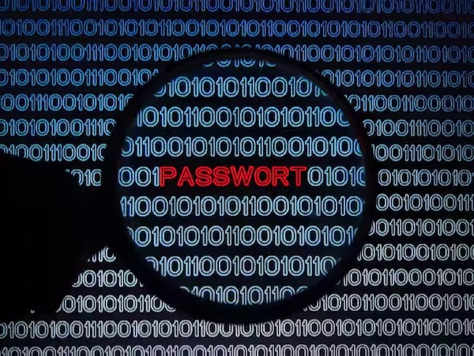
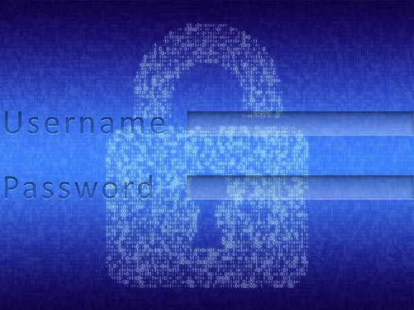
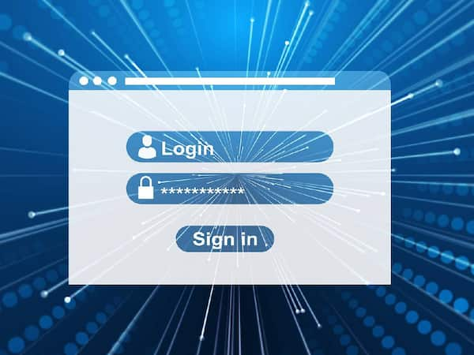
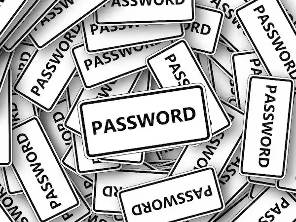

1.RoboForm
RoboForm is a popular password manager that autofills login credentials and provides advanced security features like two-factor authentication. It also features a password generator and secure storage for sensitive information.
RoboForm is a secure and multi-platform password manager that helps you remember and automatically log in to your passwords across various devices and browsers.It offers features like one-click logins, form filling, and biometric authentication for added security
2.NordPass
NordPass is a password manager from the makers of NordVPN, offering advanced security features like end-to-end encryption and two-factor authentication. It also features a password generator and autofill.
NordPass is a secure and user-friendly password manager developed by NordVPN. It offers features like end-to-end encryption, a data breach scanner, password generator, email masking, and more. NordPass helps you store, manage, and autofill your passwords across multiple devices and browsers
3.KeePass
KeePass is a free and open-source password manager that stores sensitive information in an encrypted database. It also features a password generator and autofill for added convenience.
KeePass is a free, open-source password manager known for its strong security features, including AES and Twofish encryption, and its flexibility with plugins and customizations. It allows you to store and manage passwords securely with a master password or key file
4.Bitwarden
Bitwarden is an open-source password manager that prioritizes security and privacy. It features end-to-end encryption, two-factor authentication, and a password generator for added security.
Bitwarden is an open-source password manager that offers robust security features, including end-to-end encryption, a password generator, and cross-platform support for desktop, mobile, and browser extensions. It's free to use and provides a comprehensive set of tools to keep your passwords and sensitive information secure
5.Dashlane
Dashlane is a user-friendly password manager that provides advanced security features like password analysis and alerts for data breaches. It also autofills login credentials and provides a digital wallet for secure storage.
Dashlane is a user-friendly password manager that offers features like secure password storage, dark web monitoring, real-time phishing alerts, and a VPN for public WiFi protection. It provides both personal and business plans, ensuring your passwords and personal information are safe and easily accessible across devices1
6.1Password
1Password is a highly-rated password manager that uses end-to-end encryption to protect your sensitive information. It also features a password generator, autofill, and travel mode for added security.
1Password is a highly secure and user-friendly password manager that offers features like a password generator, secure password vaults, autofill, and password sharing. It provides strong encryption and is designed to be easy to use for individuals and teams alike.
7.LastPass
LastPass is a popular password manager that securely stores and generates strong passwords. It also autofills login credentials and provides advanced security features like two-factor authentication.
LastPass is a popular password manager known for its ease of use and robust security features. It offers password vaults, secure password sharing, dark web monitoring, and multifactor authentication to keep your sensitive information safe across devices and browsers.
8.Password Boss
Password Boss is a user-friendly password manager that securely stores and generates strong passwords. It also autofills login credentials and provides advanced security features like two-factor authentication and a digital wallet.
Password Boss is a user-friendly password manager that offers features like bank-grade security, automatic website logins, dark web monitoring, and secure password sharing. It's designed to help you easily manage and protect your passwords across multiple devices